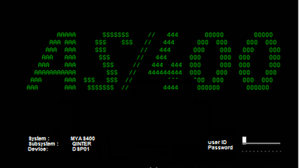

PESTAÑA TC1
Trabajo actividad uno, linea de tiempo de los sistemas operativos e introduccion al hardware.
Importante que al abrir el adjunto lo direccionara al archivo y para volver al sitio deberá dar click en la flecha <-- del navegador Web.
ANEXOS
Aqui se pueden encontrar otros productos aportados al curso como cuadros comparativos, trabajos que no lograron linkear en los otros menus y algunas imagenes.
PESTAÑA TC2
Se referencia el trabajo que describe la actividad del paso 3 del curso, en el docuemnto adjunto se describen las respuestas sobre mi aporte en el tema de planificacion y administracion de procesos en un sistema operativo.
BIBLIOGRAFIA
BIBLIOGRAFÍA
1 Tomado de: http://eq2-sistemasoperativos.blogspot.com.co/2012/04/16-nucleo-istemas-operativos.html
https://faccielearningaplicacionsistemaoperativo.wikispaces.com/Ventajas+y+Desventajas+de+Windows+2008+R2
http://bibliotecavirtual.unad.edu.co:2077/lib/unadsp/reader.action?docID=10693545&p00=sistemas+operativos+unix&ppg=167
https://hostingpedia.net/windows-server.html
Memorias propias de la certificación Windows Server 2012 MCSA, ITTalent Learning Solutions Bogotá, 2017.
https://www.suse.com/es-es/products/server/download/amd64.html/?campaign_description=FY17%20%20SEMPPC%20Demand%20Generation%20Always%20On%20Enterprise%20Linux&campaign_id=GSDGNSMPC28707&gclid=EAIaIQobChMI09vdjomE2wIVREOGCh0mowzFEAAYASAAEgKYAvD_BwE
https://opensuse.wikispaces.com/VENTAJAS+Y+DESVENTAJAS+DE+LOS+SISTEMAS+OPERATIVOS
https://www.novell.com/es-es/documentation/suse/pdfdoc/SuSE-Linux-Adminguide-9.0.0.0x86.pdf, Manual de instalacion de SUSE Linux, Manual de administracion Novell
Guias de Universidad Politecnica de Valencia - Cursado por mi.
Guias de IT Training Center - Cursos de certificacion en Windows Server 2008
PESTAÑA TC3
En este apartado se refencia al paso 4 actividad 3, en el se realiza la comparacion ente dos plataformas muy competitivas, cada una a su menera fuerte en algunos sentidos, el trabajo hacia un comparativo que buscara persoadir a un posible cliente de elegir plataformas de servidor y de cliente cada una con sus ventajas y debilidades.
El el ultimo enlace se agregan anexos como cuadros comparativos y otros productos aportados.
EVALUACION FINAL
Como aporte para mí formación en la carrera puedo anotar que este curso despejó algunas dudas sobre la plataforma Linux, despertó mi interés sobre algunos componentes de estas arquitecturas y me permitió practicar comandos básicos y avanzados para habilitar sus funcionalidades.
Mi parcialidad sobre Microsoft Windows influenció el contenido de mis entregas y aún que el software libre es ahora un posibilidad muy viable, prefiero mientras mis posibilidades lo permitan seguir usando plataformas de pago y completamente soportadas y garantizadas.
Ahora bien, a los largo del curso coincidió en que en mi trabajo se dio una revolución tecnológica, esto debido a la fusión de nuestra empresa con una multinacional con presencia en más de 50 paises alrededor del mundo.
Contra cualquier pronóstico, se recibió la directriz de usar un nuevo sistema operativo hasta ahora desconocido para mi y por supuesto para todos los usuarios de la compañía. Es así que se migrará a Cloud Ready, una versión de Chrome OS, y en el caso de ofimática a toda las herramientas de Google G-Suite.
Es aquí donde este curso cobro validez, pues me llevo a comparar los tradicionales procesos de Windows con los de esta nueva plataforma. Aunque también es cerrada como Microsoft, me hizo comprender su filosofía y me llevó a indagar su arquitectura, encontré que el Kernel se basa en linux y gracias al curso entendi como se administrarán los recursos de los equipos donde se instale.
En los laboratorios logré explorar mejor la plataforma Linux cliente y servidor, experimenté de primera mano sus virtudes, facilidad de uso y convergencia con Windows, sin embargo también la frustración de no conseguir las conexiones, montar los servicios y demás actividades que como implementador se pueden presentar.
Considero elemental este tipo de cursos, pues aunque como profesional en la materia y tras trabajar muchos años en esta área, puede uno caer en la presunción de conocerlos, no dejan de aleccionar y recordar lo fundamental como futuro ingeniero de sistemas.
Finalmente sugiero incluir prácticas enfocadas en otros tipos de plataformas como la que menciono aquí, Chrome OS, también en lo posible en MAC OS, pues aunque esta última es bastante exclusiva, no deja de ser presente y por experiencia considero que se debe al menos conocer su operación básica.